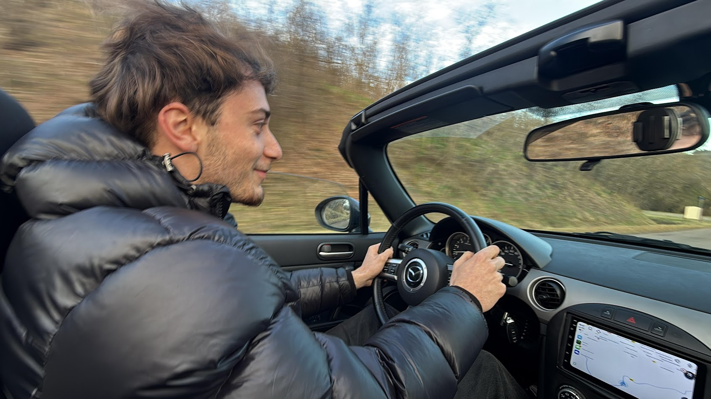
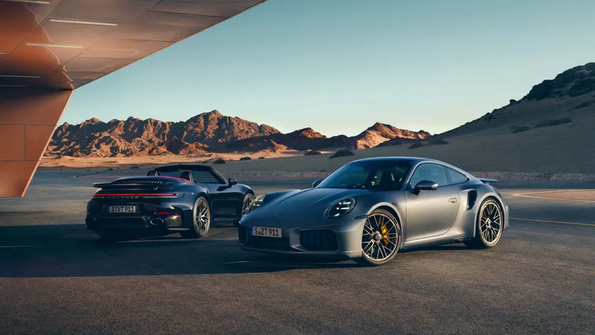
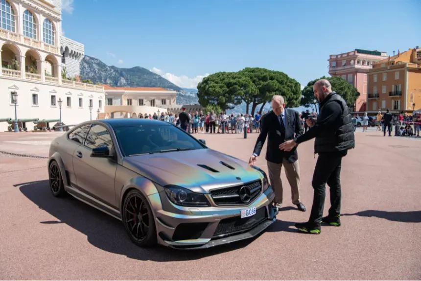

🏎️ Passion Automobile
Mon expérience atelier Renault
J’ai travaillé en garage Renault, où j’ai appris le diagnostic, les réparations mécaniques et le service client. Entretien, entretien long, préparation châssis et réglages : j’ai vécu la réalité d’un atelier constructeur, avec la rigueur de la marque et l’exigence de qualité.
Voitures que j’ai vraiment conduites
Mon expérience route et circuit inclut :
- Porsche 718 Cayman GT4 RS sur circuit (Mans, Magny-Cours, Spa)
- Mazda MX-5 (sensations, équilibre, freinage à la limite)
- Toutes les Renaults disponible en concession : Clio RS, Mégane R.S., Alpine A110, Captur, etc.
Mes voitures de rêve
- Porsche 911 Carrera (la pureté archétypale)
- Porsche 911 GT3 (légende de la piste, atmosphérique)
- Ferrari 812 Superfast (V12, son, agressivité)
- Ferrari 488 GTB (précision, turbo, coffre émotionnel)
Influenceur auto préféré
Ma source d’inspiration et d’influenceur auto, c’est GMK (Georges Maroon Kikano), un celebre vidéaste dont le but est de partager sa passion automobile avec sa communauté. Leur contenu accompagne ma culture auto et mes objectifs.
Visions & objectif
Je veux continuer à construire une carrière où mes compétences techniques (dev web et réseau) se marient avec ma passion automobile, afin d’apporter des projets digitaux pour marques premium et automotive. Mon ambition : des projets autour de la performance, de la mobilité et des experiences auto 360°.
Galerie et souvenirs





